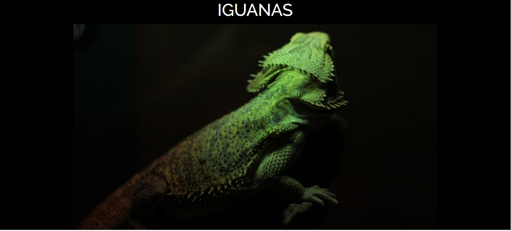

La iguana común o iguana verde es un gran lagarto arbóreo de América Central y de Sudamérica. Se encuentra desde México hasta el sudeste de Brasil y el Pantanal del Paraguay, así como también en islas del Caribe y, de manera asilvestrada, en Florida. Wikipedia